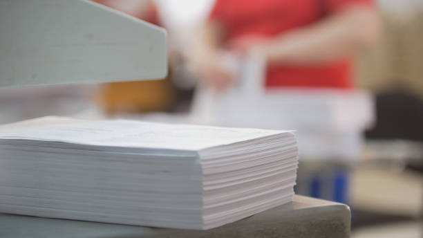
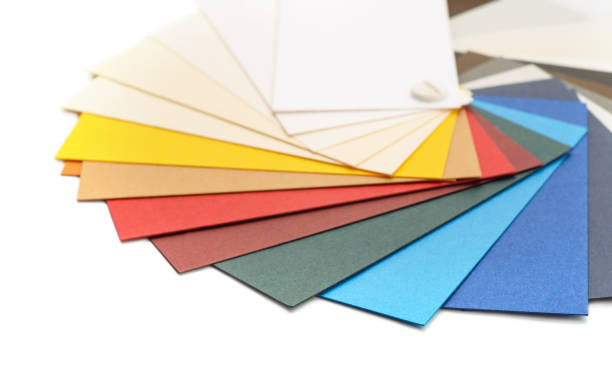
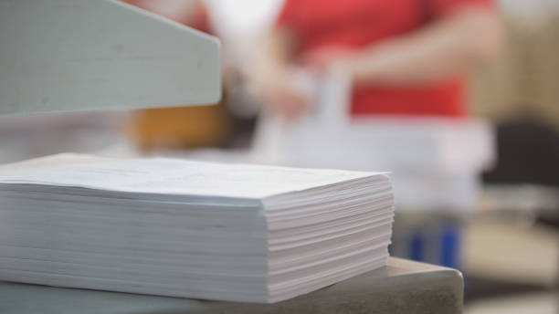
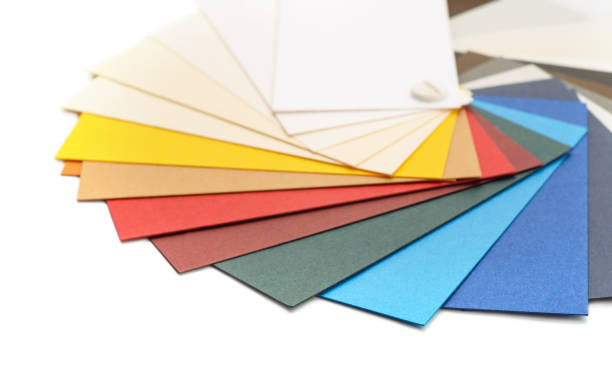

So, Why Papers?
Papers have been a timeless way to share knowledge. They are easy to use and easy to access. They help people stay organized even with the existence of computers. From printed copies to digital formats, papers have had a crucial impact on learning and communication.
Here Are Three Reasons Why I Love Papers:
- Communication: Paper helps people share ideas clearly.
- Mass Accessibility: Printed paper makes knowledge available to many people.
- Versatility: Paper can be shared in print or online.
 


